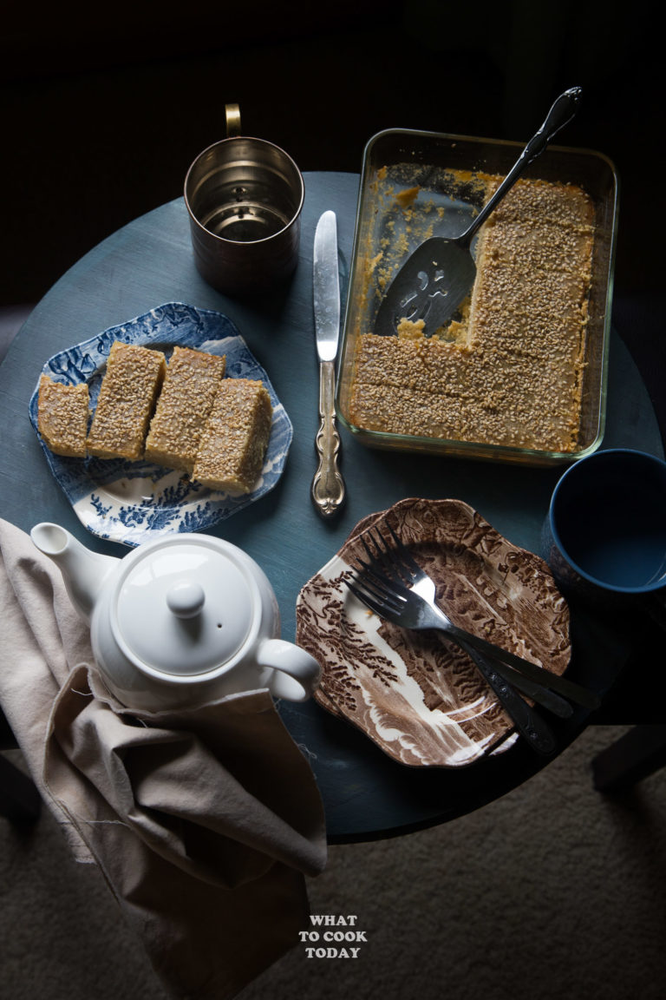

Semolina Cake

Description
Sweet semolina cake of India origin with a Burmese twist with rich creamy coconut milk will satisfy that sweet
tooth without overdoing it!
Ingredients
- 2 cups semolina flour (cream of wheat / soojee)
- 2 cups sugar
- 1/4 tsp salt
- 2 1/2 cups canned or fresh coconut cream
- 2 large eggs beaten
- 3 cups water
- 1/2 cup cooking oil or you can use butter or ghee
- 2 Tbsp white poppy seeds I used white sesame seeds
Steps
- Oil a rectangular heat-proof dish, about 9 x 13 inch size. Place the semolina flour in a large non-stick pan
and toast it for about 2-3 minutes. It will turn slightly brown
- Add sugar, coconut cream, salt, eggs, water, and cooking oil to the pan. Mix until they are combined well
with the semolina flour. Cover and let stand for 30 minutes. Preheat oven to 350 F
- Turn on the heat on the stove and cook the semolina mixture over moderate heat until it started to boil and
then lower the heat and continue to stir and cook for about 20 minutes. The dough-like mixture will come
away from the pan. Spoon this mixture into the rectangular dish you prepare earlier. Gently pack it down
with a rubber spatula. Use a rubber spatula to smooth the surface. Sprinkle the seeds all over the surface
- Bake in the preheated oven for 30-40 minutes (depending on your oven). If the top is not golden brown, turn
off the oven and turn on the broiler in the oven on low and let the cake brown a little bit. Keep a very
close watch as they might get burned if you walk away. Remove from the oven and let it cool down before
cutting. Serve at room temperature as snacks or dessert